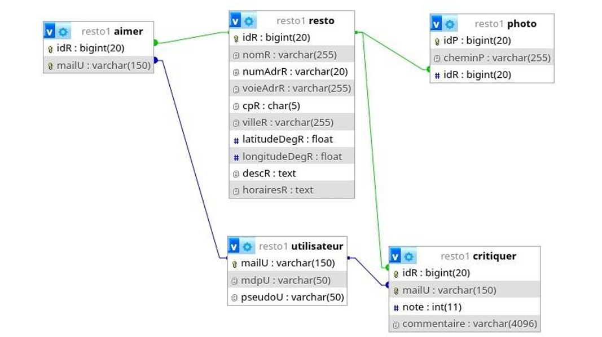
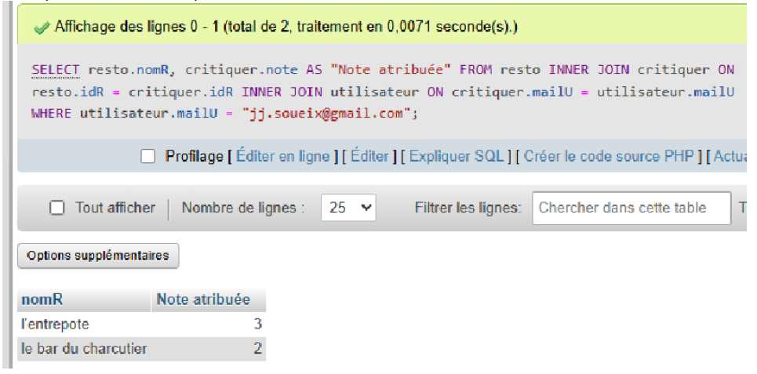
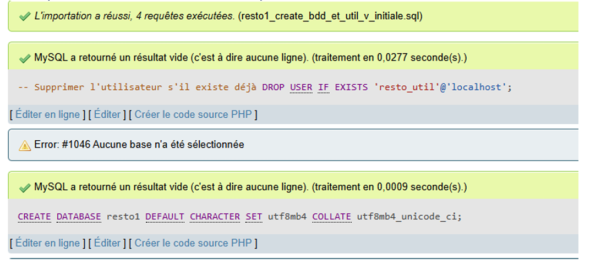
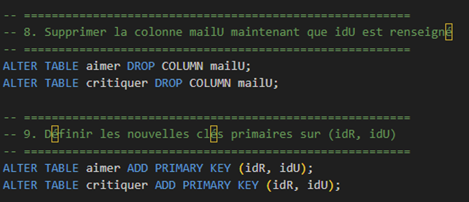

Une première base de données a été conçue par un précédent stagiaire. Les scripts de création de la base initiale sont à télécharger depuis Moodle.
Travail à faire :
Créer la base de données resto1 et l'utilisateur resto_util avec droits spécifiques à l'aide des scripts SQL fournis.
Importer la base et constater que la table Utilisateur a comme clé primaire l'e-mail.

Formuler et tester une requête SQL pour afficher le nom du restaurant et la note attribuée par l'utilisateur jj.soueix@gmail.com.

Expliquer pourquoi utiliser l'email comme clé primaire n’est pas judicieux :
Peut changer dans le temps.
Long à indexer et moins performant.
Risque de doublons à cause des variantes d’écriture.
Donnée sensible exposée dans toutes les jointures.
Il vaut mieux utiliser un identifiant unique.
Mettre au point un script SQL pour modifier la base existante :
Créer une clé primaire idU auto-incrémentée pour Utilisateur et conserver mailU avec contrainte d’unicité.
Dans les tables où mailU est utilisé comme clé étrangère, le remplacer par idU sans altérer les jointures.
Supprimer les clés étrangères sur aimer et critiquer pour permettre les modifications.
Supprimer les index liés à mailU et les clés primaires existantes sur les tables dépendantes.
Ajouter idU aux tables dépendantes et remplir selon mailU, puis supprimer mailU dans ces tables.
Redéfinir les clés primaires sur (idR, idU) dans aimer et critiquer.
Recréer les clés étrangères liant idU à Utilisateur et idR à Resto.
Tester la base modifiée en reformulant la requête de l’étape 2 et vérifier que les résultats sont identiques.


Résultat :
La base a été correctement modifiée. idU est maintenant la clé primaire et toutes les relations et intégrités référentielles sont respectées. La requête test renvoie les mêmes résultats qu’avant la modification.